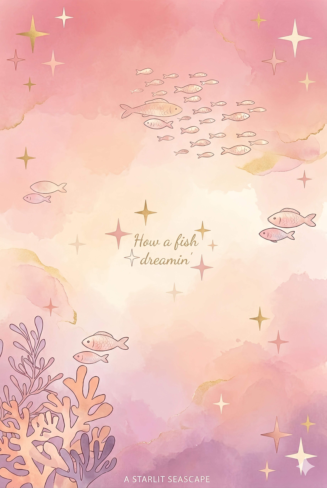

Nghệ thuật trong tủ kính
Nghệ thuật trong bối cảnh hiện đại đang có nguy cơ bị tiếp nhận sai lệch khỏi bản chất ban đầu của nó do sự thay đổi về không gian, chức năng và hệ quy chiếu thẩm mỹ.
#vanhoc
A fish floating in its own dreams and emotions
Hallo hallo, chào mừng tới với chiếc bể cá trôi nổi những vụn vặt lộn xộn linh tinh lung tung về tất cả những vấn đề có thể xuất hiện trong cuộc sống của tớ! Tớ là 海乃 英莉夏, hay Umino Erika - một cô nàng có vẻ như đã đầu thai sai thời điểm để thay vì trở thành một con cá bơi lội tung tăng và đắm mình vào đại dương thăm thẳm thì lại đang ngồi đây, đau lưng, thiếu ngủ, uống Monster cũng phải chọn lon màu hồng và lạch cạch gõ phím với mong mỏi được isekai vào một thế giới nào đó bớt áp lực ỌwO.
Tớ là một chiếc não có vẻ luôn đi sau loài người 100 bước, lúc nào cũng có đến lắm mớ suy nghĩ kỳ (quặc) lạ và, yeah, thường xuyên rơi vào trạng thái treo máy vì quá tải thông tin… TwT. Hiện tại, tớ đang (có vẻ không) kiên trì theo đuổi sự nghiệp Văn chương mà đảm bảo ra trường chỉ có thể về nhà cầu mưa để đất mềm ra cho dễ cạp, nghiên cứu mấy vấn đề linh tinh liên quan tới đủ thứ trên đời mà kể như bản đồ sao hay các vấn đề Chiêm tinh học OwO.
Ngoài ra, tớ còn có những sở thích mà đa phần loài người sẽ thấy kì quặc, ví dụ như ờm, dán mắt vào bể cá hàng giờ đồng hồ liên tục không nhúc nhích hay bật phim kinh dị làm background music mỗi khi nướng cookies. Anyways, khi nghĩ ra gì đó thì tớ sẽ tiếp tục update sau, và trước khi đó thì một lần nữa, chào mừng cậu tới với thế giới nhỏ của tớ >w<
Một đêm nọ như bao đêm nào, chiếc blog này ra đời với sứ mệnh không gì hơn là phục vụ cho công cuộc lảm nhảm lải nhải của một yapper không biết phải yap với ai TT. Chủ đề trên blog bao gồm tất tần tật những gì chiếc não khiêm tốn này có thể nghĩ đến, từ những vấn đề vĩ mô như Triết học hay Vật lý (không thường xuyên lắm), cho tới những vấn đề lông gà vỏ tỏi như cách làm bánh mì chuối socola nhưng công thức có thêm bột whey vị socola dành cho gymer hay một số kiến thức Chiêm tinh, Văn học vụn vặt bất chợt xẹt ngang qua đầu. Anyways, nó sẽ là một chiếc bể cá khá lộn xộn, vì dù gì con cá bơi trong đó khá thường xuyên rơi vào tình trạng quá tải thông tin mà ỌwO
Để đọc thêm về 7749 thứ ngẫu nhiên xuất hiện vào những thời điểm kì quặc quái gở trong ngày, hãy check danh mục "How a fish dreamin", những chủ đề cụ thể hơn là sách và nhạc hãy check qua lần lượt các mục "How a fish enjoys reading" và "How a fish floating in music" OwO. Trong trường hợp không biết đọc gì, hãy cứ quay về trang chủ và randomly pick up một chiếc blog nào đó và tận hưởng nhé UwO
I think thats all OwO Hope u have a great time here >w<

Nghệ thuật trong bối cảnh hiện đại đang có nguy cơ bị tiếp nhận sai lệch khỏi bản chất ban đầu của nó do sự thay đổi về không gian, chức năng và hệ quy chiếu thẩm mỹ.
Ánh sao soi sọi băng giá. WrioEly's random crumbs suddently pass through my brain ><
Một chút giai điệu xưa cũ trôi nổi trong không gian tĩnh lặng của căn phòng vào một chiều cuối thu năm 2024...